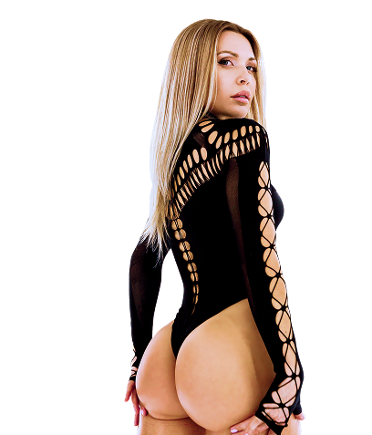

ФЛАГМАН
Метод Усмановой
Освоите технику и втянетесь в регулярные тренировки — без травм и через силу. Первая программа, с которой начинают все ученицы Кати.
Подробнее
без диет, голода и запретов
с пользой для здоровья
Похудеть, подтянуть попу и живот, набрать форму
в зале,
восстановиться после родов — тренировки
и питание под вашу цель
Для корректной работы сайта отключите VPN

С 2015 года создаёт топовые тренировки для идеальных ягодиц,
плоского живота и стройности без жёстких диет.
Уже более
580 000+ участниц тренируются с Катей, ведь она:
 Вице-чемпионка мира и чемпионка России
по фитнес-бикини
Профессиональный фитнес-тренер с опытом более
15 лет
Мама 2-х детей. Всего за 100 дней
после первых родов похудела
на 20 кг и вернулась в прежнюю
форму
Автор первых в России масштабных марафонов
стройности
Чемпионка России и мира по жиму лёжа
Вице-чемпионка мира и чемпионка России
по фитнес-бикини
Профессиональный фитнес-тренер с опытом более
15 лет
Мама 2-х детей. Всего за 100 дней
после первых родов похудела
на 20 кг и вернулась в прежнюю
форму
Автор первых в России масштабных марафонов
стройности
Чемпионка России и мира по жиму лёжа


Освоите технику и втянетесь в регулярные тренировки — без травм и через силу. Первая программа, с которой начинают все ученицы Кати.
Подробнее
Первый видимый результат за 21 день — уходит первый жир, появляется тонус и лёгкость. Для тех, кто стартует с нуля.
Подробнее
Первый объём и подтянутость ягодиц — с собственным весом. Для тех, кто впервые целенаправленно работает над попой.
Подробнее
Плотные, упругие ягодицы — следующий уровень после 1.0. С резинкой и утяжелителями, для подготовленных.
Подробнее
Убрать вываливающийся живот, который не уходит даже после похудения. Тренировки на глубокие мышцы пресса, которые отвечают за плоский живот — а не за «кубики».
Подробнее
Сжечь жир и проявить рельеф — за 6 недель. Для тех, кто уже тренировался: с гантелями, по схеме интервальных нагрузок.
Подробнее